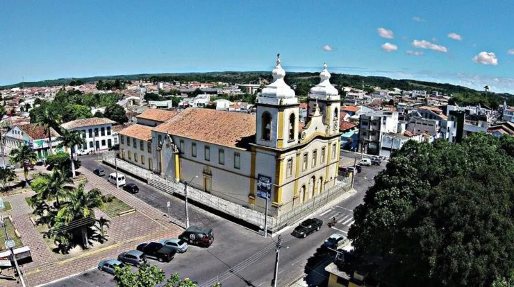

Estância
História
Pedro Homem da Costa e seu concunhado foram agraciados com as terras onde se encontra hoje o território de Estância. A doação foi feita pelo capitão-mor da Capitania de Sergipe, João Mendes, em 16 de setembro de 1621, porém, as ditas terras haviam sido adquiridas anteriormente por Diogo de Quadros e Antônio Guedes, os quais não a povoaram nem a colonizaram, razão pela qual perderam o direito da concessão. Tanto Pedro Homem da Costa, como Pedro Alves e João Dias Cardoso, este último sogro dos dois, já ocupava a gleba antes da concessão, com roças e criação de gados.
Quem primeiro desbravou as terras foi Pedro Homem da Costa e nelas edificou uma capela, dedicada a Nossa Senhora de Guadalupe, santa que nos consta, é, também, a Padroeira do México. Entre os mexicanos, Estância é uma propriedade de criação de gado e os seus ocupantes são chamados de estancieiros, daí o nome adotado por Pedro Homem da Costa: Estância.
Durante muito tempo, Estância foi subordinada à Vila de Santa Luzia do Real, atualmente Santa Luzia do Itanhy. Só em abril de 1757, o rei autorizou que realizassem na povoação de Estância "vereações, audiências, arrematações e outros atos judiciais na alternativa dos juízes ordinários", acontecendo assim, a separação jurídica da Vila de Santa Luzia, então em franca decadência. Em 25 de outubro de 1831, a sede da Vila de Santa Luzia é transferida para Estância. Em 5 de março de 1835, é criada a sua Comarca, e, finalmente, a 4 de maio de 1848, foi elevada a categoria de cidade..
A cidade de Estância, denominada por S.M. Dom Pedro II como o jardim de Sergipe, a cidade dos sobrados azulejados, das festas juninas e do barco de fogo, ainda possui um belo acervo arquitetônico.
fonte: https://transparencia.estancia.se.gov.br/historia-estancia.phpPontos Turísticos
Ponta do Saco
Prolongamento da Praia do Saco, ambiente natural ornamentado por belos coqueirais com quiosques. Na ponta sul de Sergipe, próximo à divisa com a Bahia, encontramos a mais bela praia do estado. A Praia do Saco ou da Boa Viagem, como também é conhecida, está localizada no município de Estância a 68 km da capital, Aracaju.
Praia do Abaís
Localizada a 38 km da sede do município, acesso pela rodovia SE–100. Praia de notável beleza natural que se estende pela costa oceânica por mais de 20 km cercados de belas dunas. Excelente para pesca, em virtude da abundância de peixes, base da culinária local. Sua beleza e clima agradável encantam os visitantes que chegam ao lugar, que aproveitam para relaxar, tomar um refrescante banho de mar e desfrutar de bons momentos.
Dados Gerais de acordo com o IBGE
| Prefeito (a) | GILSON ANDRADE DE OLIVEIRA |
| Vice-Prefeito (a) | ANDRÉ GRAÇA SANTOS |
| Site do município | https://www.estancia.se.gov.br/site/paginadinamica/paginadinamica-200820191042302180-Atual-Governo |
| Área territorial | 647,344 km² |
| População estimada | 69.919 pessoas |
| Densidade demográfica | 100,00 hab/km² |
| IDHM | 0,647 |
| PIB per capita | R$ 28.293,45 |